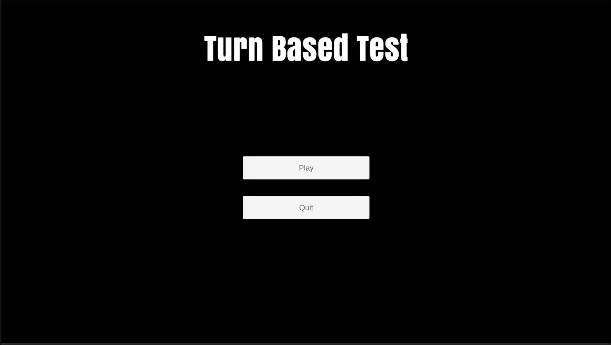

About
A solo-developed turn-based battle system inspired by Pokémon, featuring an original elemental triangle of Chaos, Order, and Spirit types. Players choose a unit, select moves, and battle an AI-controlled opponent using type advantages and simple move logic.
Project Info
- Role: Solo Developer
- Engine: Unity
- Language: C#
- View source on GitHub
View source on GitHub | Play on itch.io
Introduction
This project was a solo-developed turn-based battle system inspired by Pokémon-style combat but featuring an original elemental triangle of Chaos, Order, and Spirit types. It includes a complete battle loop with unit and move selection, type-based advantages, and a responsive UI. All gameplay logic, UI, and flow were designed and implemented independently.
Features I implemented
Unit selection menu
Created the system where the player chooses one of three available units before entering battle. The menu supports smooth navigation, visual highlighting, and clean transitions into the combat scene for an intuitive start to each match.

Move selection system
Built the move-selection interface where players pick four moves for their chosen unit. Each move includes a short description and fixed damage value, designed to balance simplicity with tactical decision-making.

Turn-based battle logic
Developed the full turn-handling system managing player and enemy actions in sequence. The system calculates damage, applies type advantages between Chaos, Order, and Spirit, and updates health and text feedback dynamically after each move.
Enemy AI
Implemented a lightweight AI that chooses moves based on type advantages and randomness for unpredictability. The AI evaluates the player’s current unit type to create dynamic and fair encounters.
.gif)
Enemy AI
Implemented a lightweight AI that chooses moves based on type advantages and randomness for unpredictability. The AI evaluates the player’s current unit type to create dynamic and fair encounters.
Battle UI & feedback
Designed and scripted the in-battle HUD showing health, move buttons, and battle messages. Added text-based feedback for effectiveness results (“It was super effective!”) and smooth transitions for clear, engaging turn flow.
UX polish and game flow
Refined turn pacing, transitions, and UI responsiveness to make the entire experience smoother. Added simple animations and adjusted text timing to improve readability and maintain a satisfying battle rhythm.